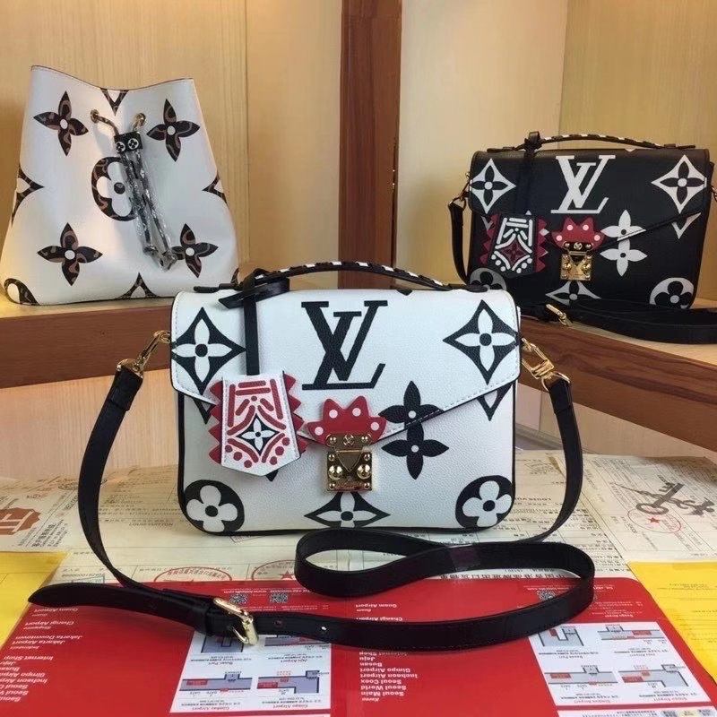

A wealthy fertilizer manufacter and one of five children. He was born in the coastal city, Granville, on the shore of Normandy in 1905. He was five years old and moved to Paris with his family. His parents hoped that he would become a diplomat, but Dior was artistically inclined to sell his pocket money sketches on the street. Dior took over a small art gallery after leaving school, which his father purchased for him, where a friend and he sold the work of Pablo Picasso. After the Great Depression began in 1929, Dior was forced to close his art gallery, with his mother and brother dying and a failure of his father's company. He then mode designer Robert Piguet worked until he was called for military service in 1940. When his service ended in 1942, he started working for Lucien Long, couturier, the key designers being he and Pierre Balmain. Like another French studio during the war, Lelong
The louboutin is an iconic model from Maison Christian Louboutin, a stiltbox with a flat heel of 100 mm. The slim heel and the pronounced ark supplement the low-cut vamp and appealing point toe with an elegant and timeless look. In soft Nappa comic print leather, it is built for fresh modern appeal this season.
The Louis Vuitton bag is a small, compact and soft, it's easy to bring with your removable leather strap anywhere in your hand or on your shoulders or cross-body.
The sweatshirt hoodies have a wide fit and a kangaroo pocket. It is made of cotton fleece. It can be mixed with the other Dior creations of the series.